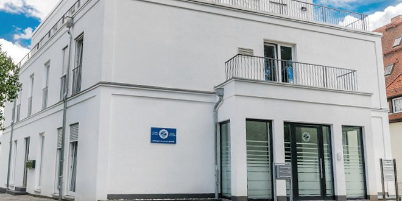
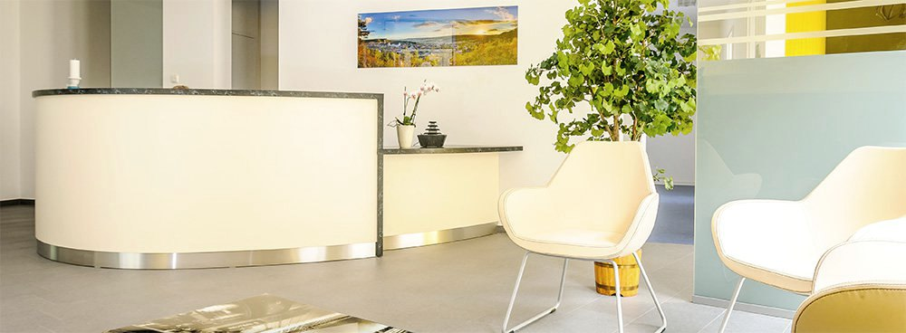
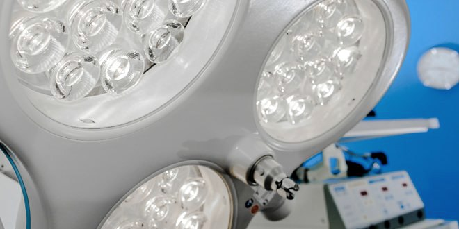

Wir bewegen Sie! Orthopädie und Gelenkchirurgie in Jena.
Wir erhalten Ihre Gelenke, solange es geht, und operieren schonend, wenn es nötig ist. In unserer eigenen Klinik.



Ein Ansatz. Von der Diagnose bis zur Nachsorge.
Untersuchung, Therapie, Operation und Rehabilitation greifen bei uns ineinander. Röntgen und Ultraschall stehen im Haus, operiert wird in unserer eigenen Klinik, die Nachsorge begleiten wir gemeinsam mit Physiotherapeuten aus der Region. So geht keine Information verloren, und Sie haben feste Ansprechpartner.
-
Erkennen
Am Anfang steht eine gründliche Untersuchung. Röntgen und Ultraschall machen wir direkt im Haus, CT und MRT organisieren wir über erfahrene Partner.
-
Erhalten
Wo es möglich ist, behandeln wir ohne Operation. Mit Physiotherapie, Eigenblut, Zelltherapie, Stoßwelle oder manueller Medizin.
-
Operieren
Ist ein Eingriff nötig, operieren wir arthroskopisch und minimalinvasiv, ambulant oder stationär in unserer Klinik.
-
Begleiten
Nach dem Eingriff begleiten wir Ihre Rehabilitation mit klaren Nachbehandlungsplänen und Physiotherapeuten aus unserem Netzwerk.
Schwerpunkte nach Gelenk
Wählen Sie das Gelenk, das Ihnen Beschwerden macht.
- KnieArthrose, Meniskus, Kreuzband, Knorpelschaden. Von der Spritze bis zur arthroskopischen Operation.
- SchulterKalkschulter, Sehnenriss, Schultersteife, Instabilität nach Ausrenkung.
- HüfteArthrose, gelenkerhaltende Hüftarthroskopie, künstliches Hüftgelenk.
- Ellenbogen, Hand, Sprunggelenk und FußTennisarm, Karpaltunnelsyndrom, Bandinstabilität, Hallux valgus.